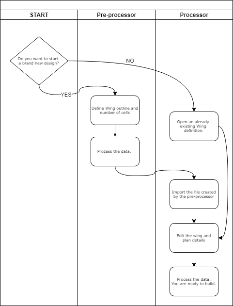
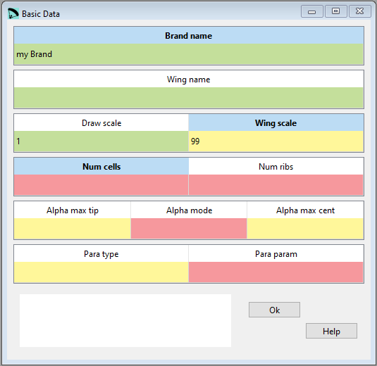
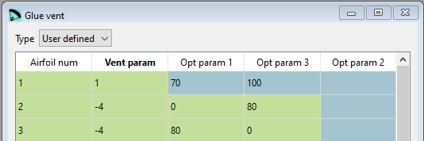

Introduction to lepg¶
Workflow¶
Lepg is a graphical front end to the calculation programm lep written originally by Pere Casellas. The goal of Lepg is to provide an easy as possible GUI allowing to edit the data needed for wing calculation.
The workflow:

Input fields¶
Lepg does help editing the data and does take care about formatting the data in the files needed to run lep. But still some backround knowledge about the lep data is needed.
The colored background does show the result of the range checking running in the background:
green: values are within the defined range
yellow: lepg is unable to determine if the value is valid or not. In the image above a wing scale of 1:99. This scale is out of the range defined initially in lepg, but for a specific case it still could make sense.
red: here’s definitely something wrong
Not all parameters are needed at any time:
Grey fields indicate unused input fields depending on the currently selected parameter type.
The Online help does try to cover the most important topics. If you want or need to know it in all details you must have a look at Peres website Laboratori d'envol.